ಮುಖಪುಟಚಿತ್ರ ಕೃಪೆ
ಚಿತ್ರ ಕೃಪೆ
ಪಂದ್ಯದ ದಿನದ ಫೋಟೋಗಳು ಬರುವವರೆಗೆ ಈ ತಾಣದ ಚಿತ್ರಗಳು ವಿಕಿಮೀಡಿಯಾ ಕಾಮನ್ಸ್ನ ತಾತ್ಕಾಲಿಕ ಚಿತ್ರಗಳು. ಪ್ರತಿಯೊಂದನ್ನೂ ಅದರ ಪರವಾನಗಿಯಡಿ ಕೆಳಗೆ ಉಲ್ಲೇಖಿಸಲಾಗಿದೆ.
ಸರ್ ಎಂ. ವಿಶ್ವೇಶ್ವರಯ್ಯನವರ ಭಾವಚಿತ್ರ: ಸಾರ್ವಜನಿಕ ಸ್ವತ್ತು. ಲಾಂಛನಗಳು: ಗಲ್ಲಿ ಕ್ರಿಕೆಟ್ ಟ್ರಸ್ಟ್.
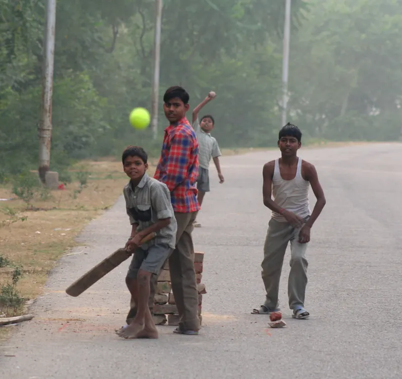
Street Cricket, Uttar Pradesh, India.jpg, foxypar4c. CC BY 2.0, via Wikimedia Commons. ಕತ್ತರಿಸಿ ಗಾತ್ರ ಬದಲಿಸಲಾಗಿದೆ. Kids in Village.jpg, SenthuranV. CC BY-SA 4.0, via Wikimedia Commons. ಕತ್ತರಿಸಿ ಗಾತ್ರ ಬದಲಿಸಲಾಗಿದೆ.
Kids in Village.jpg, SenthuranV. CC BY-SA 4.0, via Wikimedia Commons. ಕತ್ತರಿಸಿ ಗಾತ್ರ ಬದಲಿಸಲಾಗಿದೆ. Young monks playing cricket.jpg, Anton Gutmann. CC BY-SA 4.0, via Wikimedia Commons. ಕತ್ತರಿಸಿ ಗಾತ್ರ ಬದಲಿಸಲಾಗಿದೆ.
Young monks playing cricket.jpg, Anton Gutmann. CC BY-SA 4.0, via Wikimedia Commons. ಕತ್ತರಿಸಿ ಗಾತ್ರ ಬದಲಿಸಲಾಗಿದೆ. Street Cricket Batter India.jpg, Tom Maisey from UK. CC BY 2.0, via Wikimedia Commons. ಕತ್ತರಿಸಿ ಗಾತ್ರ ಬದಲಿಸಲಾಗಿದೆ.
Street Cricket Batter India.jpg, Tom Maisey from UK. CC BY 2.0, via Wikimedia Commons. ಕತ್ತರಿಸಿ ಗಾತ್ರ ಬದಲಿಸಲಾಗಿದೆ. BMC & cricket at Cross Maidan Mumbai (© Nrupen Madhvani).jpg, Nrupen Madhvani. CC BY-SA 4.0, via Wikimedia Commons. ಕತ್ತರಿಸಿ ಗಾತ್ರ ಬದಲಿಸಲಾಗಿದೆ.
BMC & cricket at Cross Maidan Mumbai (© Nrupen Madhvani).jpg, Nrupen Madhvani. CC BY-SA 4.0, via Wikimedia Commons. ಕತ್ತರಿಸಿ ಗಾತ್ರ ಬದಲಿಸಲಾಗಿದೆ. Cricket in salwar.jpg, meg and rahul. CC BY 2.0, via Wikimedia Commons. ಕತ್ತರಿಸಿ ಗಾತ್ರ ಬದಲಿಸಲಾಗಿದೆ.
Cricket in salwar.jpg, meg and rahul. CC BY 2.0, via Wikimedia Commons. ಕತ್ತರಿಸಿ ಗಾತ್ರ ಬದಲಿಸಲಾಗಿದೆ. M. Chinnaswamy Stadium (8697937415).jpg, Ashwin Kumar from Bangalore, India. CC BY-SA 2.0, via Wikimedia Commons. ಕತ್ತರಿಸಿ ಗಾತ್ರ ಬದಲಿಸಲಾಗಿದೆ.
M. Chinnaswamy Stadium (8697937415).jpg, Ashwin Kumar from Bangalore, India. CC BY-SA 2.0, via Wikimedia Commons. ಕತ್ತರಿಸಿ ಗಾತ್ರ ಬದಲಿಸಲಾಗಿದೆ.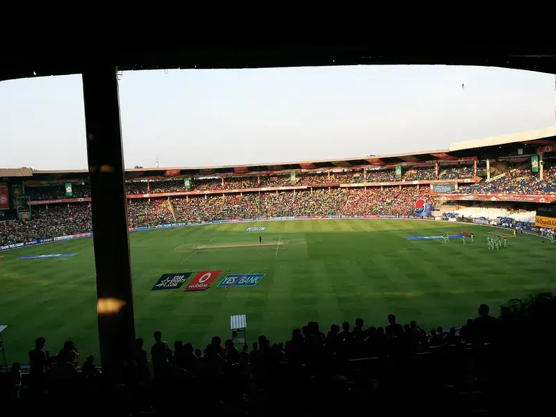
Chinnaswamy Stadium May 2014.jpg, Visdaviva. CC BY-SA 3.0, via Wikimedia Commons. ಕತ್ತರಿಸಿ ಗಾತ್ರ ಬದಲಿಸಲಾಗಿದೆ. ANZ Cricket.jpg, vijay chennupati from sydney, australia. CC BY 2.0, via Wikimedia Commons. ಕತ್ತರಿಸಿ ಗಾತ್ರ ಬದಲಿಸಲಾಗಿದೆ.
ANZ Cricket.jpg, vijay chennupati from sydney, australia. CC BY 2.0, via Wikimedia Commons. ಕತ್ತರಿಸಿ ಗಾತ್ರ ಬದಲಿಸಲಾಗಿದೆ. Beach Cricket Mamallapuram Tamil Nadu India.jpg, McKay Savage from London, UK. CC BY 2.0, via Wikimedia Commons. ಕತ್ತರಿಸಿ ಗಾತ್ರ ಬದಲಿಸಲಾಗಿದೆ.
Beach Cricket Mamallapuram Tamil Nadu India.jpg, McKay Savage from London, UK. CC BY 2.0, via Wikimedia Commons. ಕತ್ತರಿಸಿ ಗಾತ್ರ ಬದಲಿಸಲಾಗಿದೆ. Cricket cheer.jpg, Arvind Jain. CC BY-SA 2.0, via Wikimedia Commons. ಕತ್ತರಿಸಿ ಗಾತ್ರ ಬದಲಿಸಲಾಗಿದೆ.
Cricket cheer.jpg, Arvind Jain. CC BY-SA 2.0, via Wikimedia Commons. ಕತ್ತರಿಸಿ ಗಾತ್ರ ಬದಲಿಸಲಾಗಿದೆ. Kabaddi match.jpg, Sumathiraju. CC BY-SA 4.0, via Wikimedia Commons. ಕತ್ತರಿಸಿ ಗಾತ್ರ ಬದಲಿಸಲಾಗಿದೆ.
Kabaddi match.jpg, Sumathiraju. CC BY-SA 4.0, via Wikimedia Commons. ಕತ್ತರಿಸಿ ಗಾತ್ರ ಬದಲಿಸಲಾಗಿದೆ.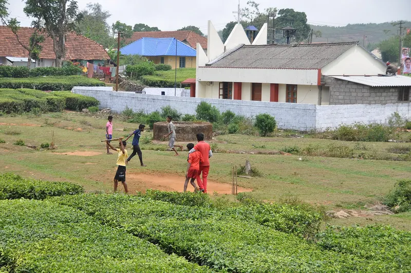
A closer view of the kids playing cricket amidst the tea bushes (28656035142).jpg, shankar s. from Dubai, united arab emirates. CC BY 2.0, via Wikimedia Commons. ಕತ್ತರಿಸಿ ಗಾತ್ರ ಬದಲಿಸಲಾಗಿದೆ.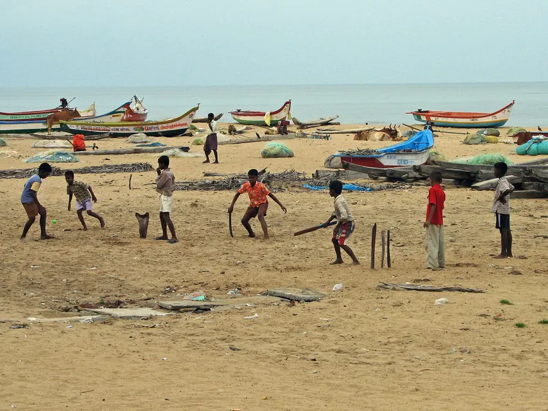
Beach Cricket Mamallapuram Tamil Nadu India.jpg, McKay Savage from London, UK. CC BY 2.0, via Wikimedia Commons. ಕತ್ತರಿಸಿ ಗಾತ್ರ ಬದಲಿಸಲಾಗಿದೆ.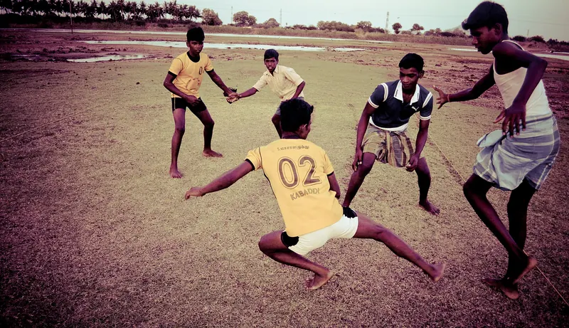
Kabadi Game.jpg, Sukumaran sundar. CC BY-SA 3.0, via Wikimedia Commons. ಕತ್ತರಿಸಿ ಗಾತ್ರ ಬದಲಿಸಲಾಗಿದೆ.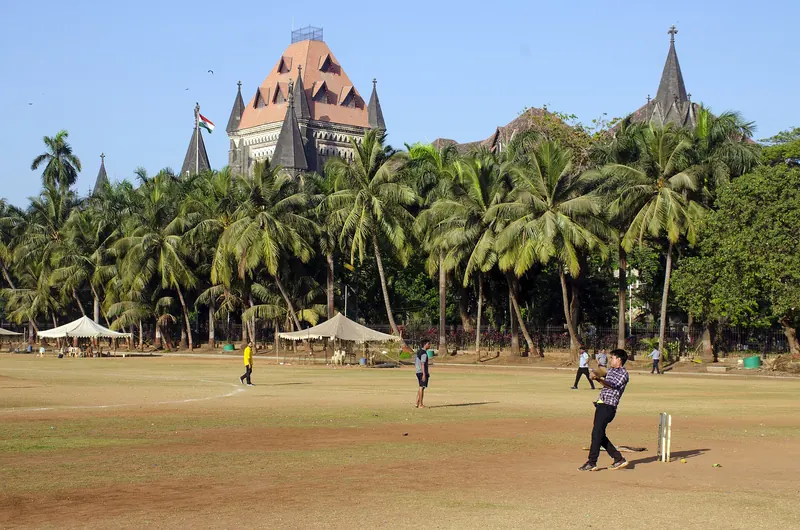
Oval Maidan, Mumbai.jpg, Rangan Datta Wiki. CC BY-SA 4.0, via Wikimedia Commons. ಕತ್ತರಿಸಿ ಗಾತ್ರ ಬದಲಿಸಲಾಗಿದೆ.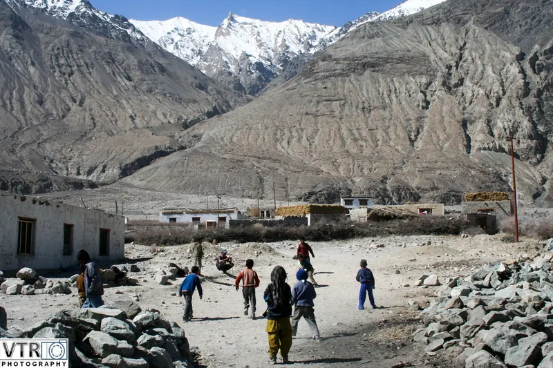
Cricket In Ladakh (68253779).jpeg, Ravi Kumar. CC BY 3.0, via Wikimedia Commons. ಕತ್ತರಿಸಿ ಗಾತ್ರ ಬದಲಿಸಲಾಗಿದೆ.- Street Cricket in India (edited).jpg, Original: Nav Nirvana Derivative work: UnpetitproleX. CC BY 2.0, via Wikimedia Commons. ಕತ್ತರಿಸಿ ಗಾತ್ರ ಬದಲಿಸಲಾಗಿದೆ.
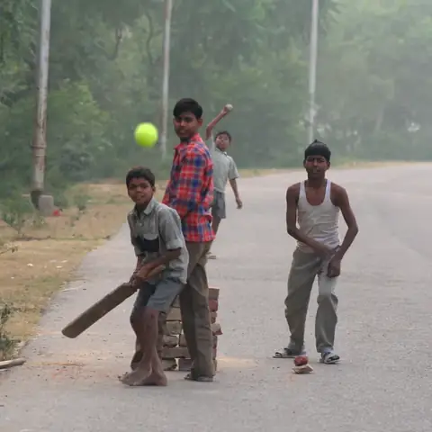
Street Cricket, Uttar Pradesh, India.jpg, foxypar4c. CC BY 2.0, via Wikimedia Commons. ಕತ್ತರಿಸಿ ಗಾತ್ರ ಬದಲಿಸಲಾಗಿದೆ. Kabadi Game.jpg, Sukumaran sundar. CC BY-SA 3.0, via Wikimedia Commons. ಕತ್ತರಿಸಿ ಗಾತ್ರ ಬದಲಿಸಲಾಗಿದೆ.
Kabadi Game.jpg, Sukumaran sundar. CC BY-SA 3.0, via Wikimedia Commons. ಕತ್ತರಿಸಿ ಗಾತ್ರ ಬದಲಿಸಲಾಗಿದೆ. Kho Kho game at a Government school in Haryana, India.jpg, Mester Jagels (Jasper van't Veen). CC BY 2.0, via Wikimedia Commons. ಕತ್ತರಿಸಿ ಗಾತ್ರ ಬದಲಿಸಲಾಗಿದೆ.
Kho Kho game at a Government school in Haryana, India.jpg, Mester Jagels (Jasper van't Veen). CC BY 2.0, via Wikimedia Commons. ಕತ್ತರಿಸಿ ಗಾತ್ರ ಬದಲಿಸಲಾಗಿದೆ. Dabba Kali2.jpg, Aprabhala. CC BY-SA 3.0, via Wikimedia Commons. ಕತ್ತರಿಸಿ ಗಾತ್ರ ಬದಲಿಸಲಾಗಿದೆ.
Dabba Kali2.jpg, Aprabhala. CC BY-SA 3.0, via Wikimedia Commons. ಕತ್ತರಿಸಿ ಗಾತ್ರ ಬದಲಿಸಲಾಗಿದೆ. Jgp gilli danda.jpg, Srvyadav. CC BY-SA 4.0, via Wikimedia Commons. ಕತ್ತರಿಸಿ ಗಾತ್ರ ಬದಲಿಸಲಾಗಿದೆ.
Jgp gilli danda.jpg, Srvyadav. CC BY-SA 4.0, via Wikimedia Commons. ಕತ್ತರಿಸಿ ಗಾತ್ರ ಬದಲಿಸಲಾಗಿದೆ. Tug of War - Kids Playing.jpg, Joy Agyepong. CC BY-SA 4.0, via Wikimedia Commons. ಕತ್ತರಿಸಿ ಗಾತ್ರ ಬದಲಿಸಲಾಗಿದೆ.
Tug of War - Kids Playing.jpg, Joy Agyepong. CC BY-SA 4.0, via Wikimedia Commons. ಕತ್ತರಿಸಿ ಗಾತ್ರ ಬದಲಿಸಲಾಗಿದೆ. Game of marbles in Mumbai.jpg, Whit Andrews. CC BY 2.0, via Wikimedia Commons. ಕತ್ತರಿಸಿ ಗಾತ್ರ ಬದಲಿಸಲಾಗಿದೆ.
Game of marbles in Mumbai.jpg, Whit Andrews. CC BY 2.0, via Wikimedia Commons. ಕತ್ತರಿಸಿ ಗಾತ್ರ ಬದಲಿಸಲಾಗಿದೆ.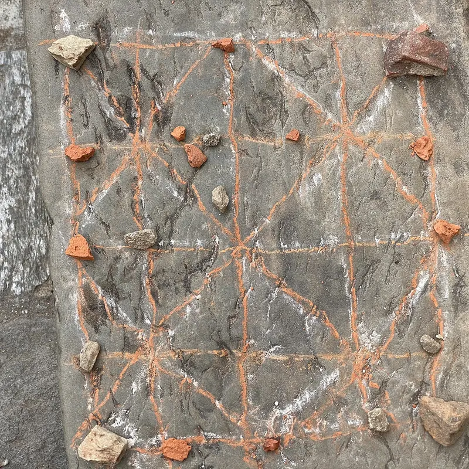
Bagh Chal table 2.jpg, E.dronism. CC0, via Wikimedia Commons.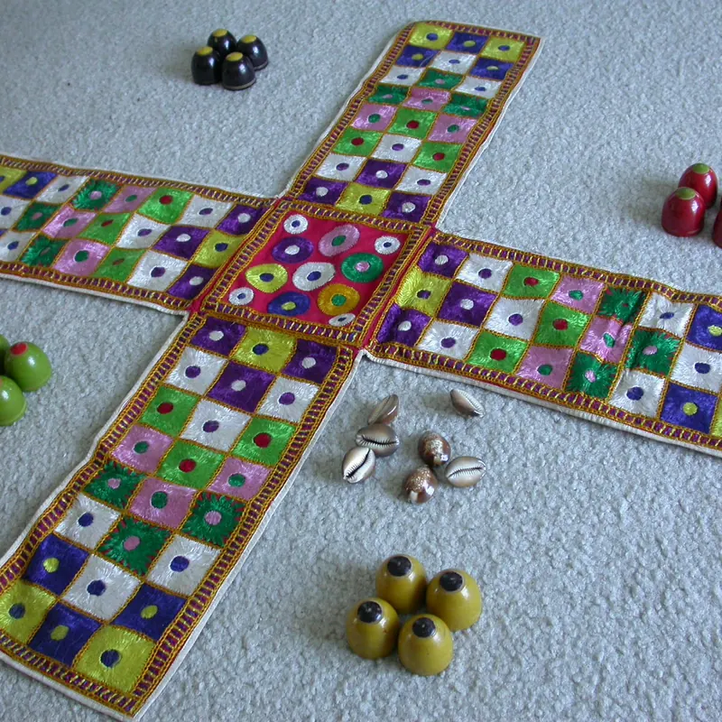
Chopat.jpg, Chopatfan. CC BY 3.0, via Wikimedia Commons. ಕತ್ತರಿಸಿ ಗಾತ್ರ ಬದಲಿಸಲಾಗಿದೆ.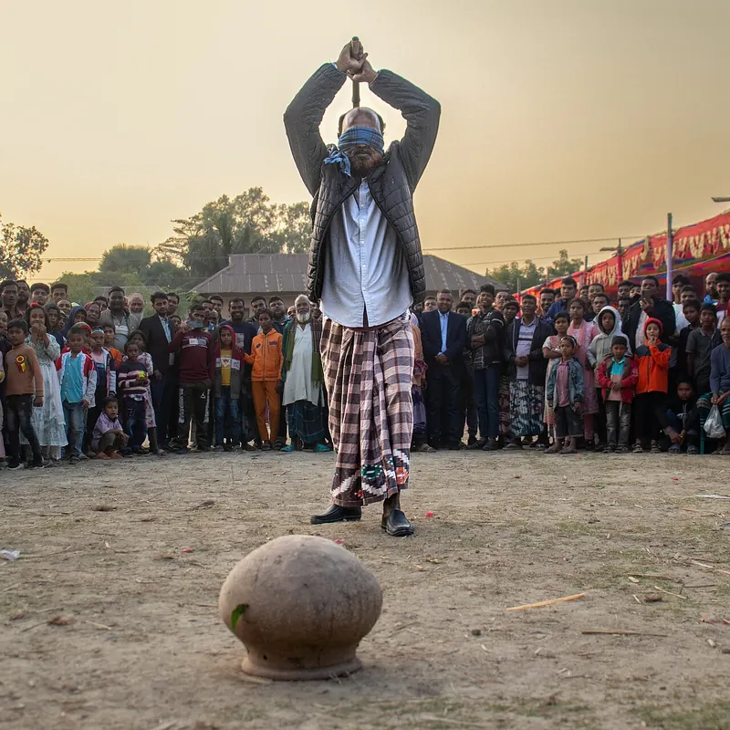
Blindfolded Pot-Breaking Game at a Rural Fair in Bangladesh.jpg, Photographer joy. CC BY-SA 4.0, via Wikimedia Commons. ಕತ್ತರಿಸಿ ಗಾತ್ರ ಬದಲಿಸಲಾಗಿದೆ. Beach Cricket Mamallapuram Tamil Nadu India.jpg, McKay Savage from London, UK. CC BY 2.0, via Wikimedia Commons. ಕತ್ತರಿಸಿ ಗಾತ್ರ ಬದಲಿಸಲಾಗಿದೆ.
Beach Cricket Mamallapuram Tamil Nadu India.jpg, McKay Savage from London, UK. CC BY 2.0, via Wikimedia Commons. ಕತ್ತರಿಸಿ ಗಾತ್ರ ಬದಲಿಸಲಾಗಿದೆ.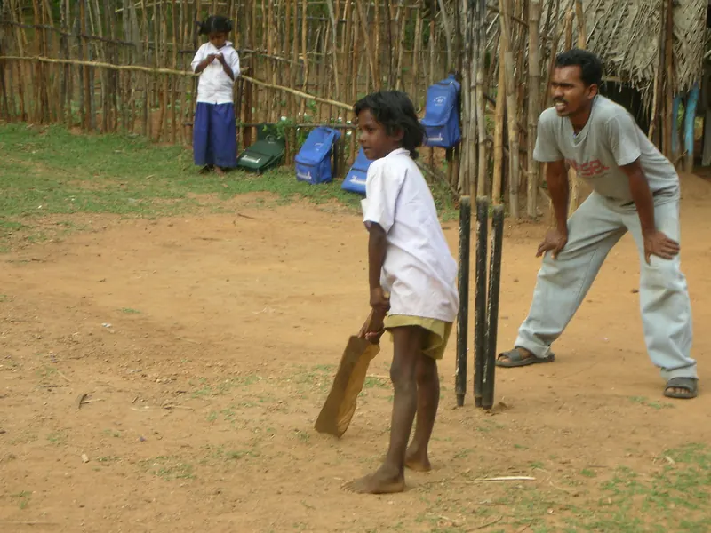
Street Cricket Batter India.jpg, Tom Maisey from UK. CC BY 2.0, via Wikimedia Commons. ಕತ್ತರಿಸಿ ಗಾತ್ರ ಬದಲಿಸಲಾಗಿದೆ.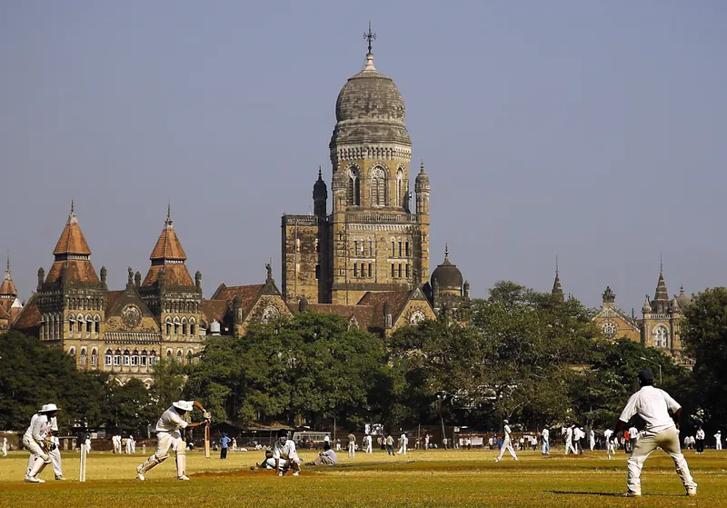
BMC & cricket at Cross Maidan Mumbai (© Nrupen Madhvani).jpg, Nrupen Madhvani. CC BY-SA 4.0, via Wikimedia Commons. ಕತ್ತರಿಸಿ ಗಾತ್ರ ಬದಲಿಸಲಾಗಿದೆ. Kabadi Game.jpg, Sukumaran sundar. CC BY-SA 3.0, via Wikimedia Commons. ಕತ್ತರಿಸಿ ಗಾತ್ರ ಬದಲಿಸಲಾಗಿದೆ.
Kabadi Game.jpg, Sukumaran sundar. CC BY-SA 3.0, via Wikimedia Commons. ಕತ್ತರಿಸಿ ಗಾತ್ರ ಬದಲಿಸಲಾಗಿದೆ. A closer view of the kids playing cricket amidst the tea bushes (28656035142).jpg, shankar s. from Dubai, united arab emirates. CC BY 2.0, via Wikimedia Commons. ಕತ್ತರಿಸಿ ಗಾತ್ರ ಬದಲಿಸಲಾಗಿದೆ.
A closer view of the kids playing cricket amidst the tea bushes (28656035142).jpg, shankar s. from Dubai, united arab emirates. CC BY 2.0, via Wikimedia Commons. ಕತ್ತರಿಸಿ ಗಾತ್ರ ಬದಲಿಸಲಾಗಿದೆ.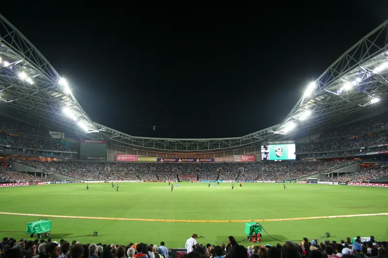
ANZ Cricket.jpg, vijay chennupati from sydney, australia. CC BY 2.0, via Wikimedia Commons. ಕತ್ತರಿಸಿ ಗಾತ್ರ ಬದಲಿಸಲಾಗಿದೆ. A closer view of the kids playing cricket amidst the tea bushes (28656035142).jpg, shankar s. from Dubai, united arab emirates. CC BY 2.0, via Wikimedia Commons. ಕತ್ತರಿಸಿ ಗಾತ್ರ ಬದಲಿಸಲಾಗಿದೆ.
A closer view of the kids playing cricket amidst the tea bushes (28656035142).jpg, shankar s. from Dubai, united arab emirates. CC BY 2.0, via Wikimedia Commons. ಕತ್ತರಿಸಿ ಗಾತ್ರ ಬದಲಿಸಲಾಗಿದೆ.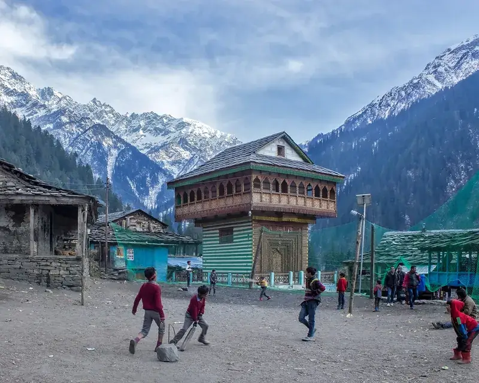
Street Cricket in India (edited).jpg, Original: Nav Nirvana Derivative work: UnpetitproleX. CC BY 2.0, via Wikimedia Commons. ಕತ್ತರಿಸಿ ಗಾತ್ರ ಬದಲಿಸಲಾಗಿದೆ.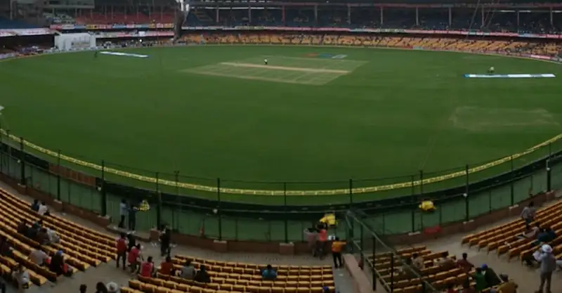
Chinnaswamy Stadium May 2014.jpg, Visdaviva. CC BY-SA 3.0, via Wikimedia Commons. ಕತ್ತರಿಸಿ ಗಾತ್ರ ಬದಲಿಸಲಾಗಿದೆ.- Oval Maidan, Mumbai.jpg, Rangan Datta Wiki. CC BY-SA 4.0, via Wikimedia Commons. ಕತ್ತರಿಸಿ ಗಾತ್ರ ಬದಲಿಸಲಾಗಿದೆ.
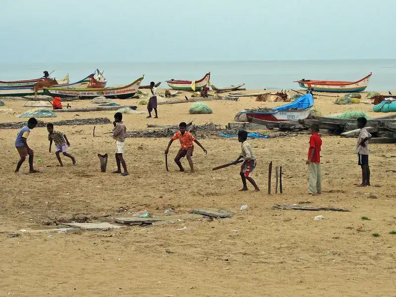
Beach Cricket Mamallapuram Tamil Nadu India.jpg, McKay Savage from London, UK. CC BY 2.0, via Wikimedia Commons. ಕತ್ತರಿಸಿ ಗಾತ್ರ ಬದಲಿಸಲಾಗಿದೆ.- Chinnaswamy Stadium.jpg, Aniket Suryavanshi from Solapur, India. CC BY 2.0, via Wikimedia Commons. ಕತ್ತರಿಸಿ ಗಾತ್ರ ಬದಲಿಸಲಾಗಿದೆ.
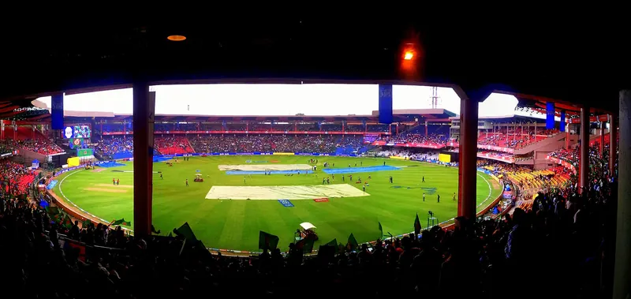
Chinnaswamy Stadium MI vs RCB.jpg, Ashwin Kumar. CC BY-SA 2.0, via Wikimedia Commons. ಕತ್ತರಿಸಿ ಗಾತ್ರ ಬದಲಿಸಲಾಗಿದೆ. Oval Maidan, Mumbai.jpg, Rangan Datta Wiki. CC BY-SA 4.0, via Wikimedia Commons. ಕತ್ತರಿಸಿ ಗಾತ್ರ ಬದಲಿಸಲಾಗಿದೆ.
Oval Maidan, Mumbai.jpg, Rangan Datta Wiki. CC BY-SA 4.0, via Wikimedia Commons. ಕತ್ತರಿಸಿ ಗಾತ್ರ ಬದಲಿಸಲಾಗಿದೆ.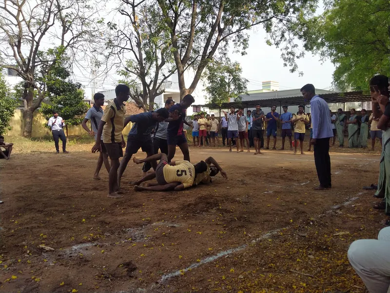
Kabaddi match.jpg, Sumathiraju. CC BY-SA 4.0, via Wikimedia Commons. ಕತ್ತರಿಸಿ ಗಾತ್ರ ಬದಲಿಸಲಾಗಿದೆ.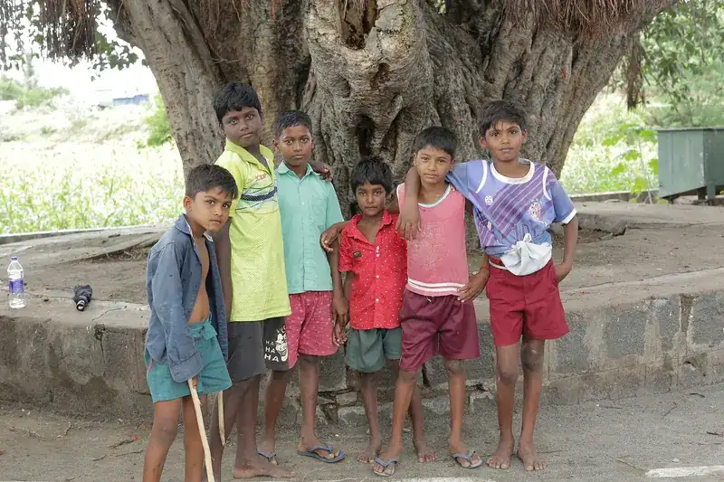
Kids in Village.jpg, SenthuranV. CC BY-SA 4.0, via Wikimedia Commons. ಕತ್ತರಿಸಿ ಗಾತ್ರ ಬದಲಿಸಲಾಗಿದೆ.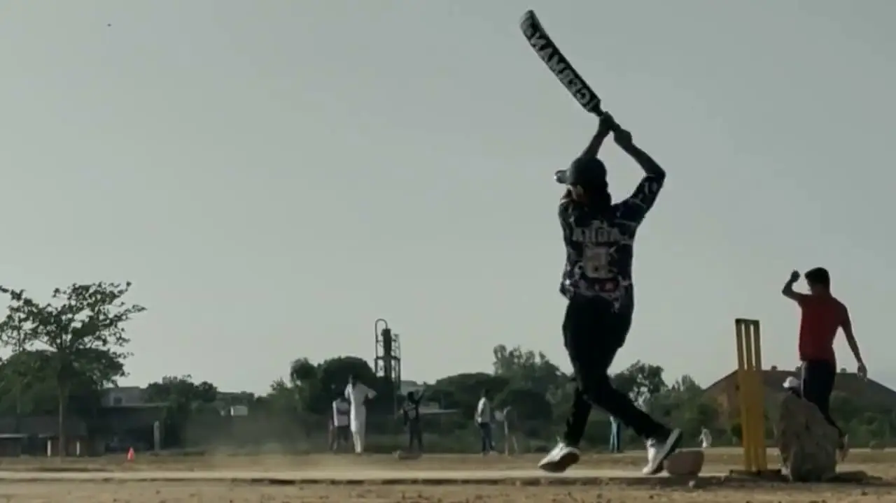
Cricketer practicing batting on sunny day (video), Pexels contributor. Pexels License (free to use, no attribution required), via Pexels.
{kind=link}
{kind=link}
{kind=link}
{kind=link}
.jpg){kind=link}
{kind=link}
.jpg){kind=link}
{kind=link}
{kind=link}
{kind=link}
{kind=link}
{kind=link}
.jpg){kind=link}
{kind=link}
{kind=link}
.jpeg){kind=link}
.jpg){kind=link}
{kind=link}
{kind=link}
{kind=link}
{kind=link}
{kind=link}
{kind=link}
{kind=link}
{kind=link}
{kind=link}
{kind=link}